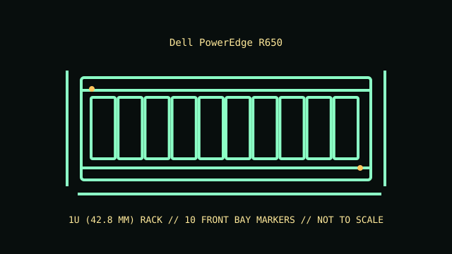

[ MODEL IDENTIFICATION // POWEREDGE R650 // 15TH-GENERATION 1U SERVER ]
Dell PowerEdge R650
1U (42.8 mm); 42.8 × 482 mm (H × W); the 10-SFF chassis depth is 729.5 mm to the rear wall or 765.1 mm to PSU handles without bezel (add 22 mm with bezel). Rail and cable-management projection is additional.

REVISION CAVEAT: Front/rear drive cages and NVMe support vary by configuration. Confirm the installed backplane and controller before fitting drives or adding PCIe cards.
Specifications & fit
| Catalog subcategory | Rack server enclosures |
|---|---|
| Model / board and backplane | Dell PowerEdge R650 proprietary dual-socket system board; front/backplane options support SAS/SATA and selected NVMe layouts. The specific backplane and PERC/controller govern drive protocol. |
| Rack height / dimensions / rails | 1U (42.8 mm); 42.8 × 482 × 800 mm (H × W × D) for the standard chassis; bezel, rails and cable-management hardware add installation depth. Check the selected chassis depth and rear clearance. Dell ReadyRails sliding rail kit with optional cable-management arm; rack post style and chassis depth determine the correct rail option and required service clearance. |
| Power supply | Redundant hot-plug PSU bays support configuration-dependent AC/DC modules (including 800 W, 1100 W, 1400 W and 1600 W classes). Use a matched Dell-approved pair appropriate to the configuration. |
| Drive bays | Front drive configurations vary by chassis, with up to 10 × 2.5-inch hot-plug bays; selected builds add up to two rear 2.5-inch drives. Backplane determines SAS/SATA/NVMe support. |
| Expansion / risers | PCIe Gen4 risers provide up to three expansion slots in supported builds; exact slot count, height and bandwidth depend on riser and processor population. |
| Cooling | Redundant hot-plug fan modules, with airflow/performance level selected for CPU, drive and accelerator thermal requirements. Preserve the intended airflow shroud and fan set. |
| Compatibility | R650-specific board, memory/CPU generation, risers, backplane, carriers and power supplies. R650 and R650xs share a name family but are not assumed parts-compatible; verify exact service tag and component part numbers. |
| Revision identification | Front/rear drive cages and NVMe support vary by configuration. Confirm the installed backplane and controller before fitting drives or adding PCIe cards. |
Compatibility & preservation notes
R650-specific board, memory/CPU generation, risers, backplane, carriers and power supplies. R650 and R650xs share a name family but are not assumed parts-compatible; verify exact service tag and component part numbers.
Dell ReadyRails sliding rail kit with optional cable-management arm; rack post style and chassis depth determine the correct rail option and required service clearance. Always use the correct lifting procedure for the complete installed unit and disconnect power before service.
- Record the full model/product number, serial label, board and backplane identifiers, installed risers, PSU labels and rail-kit part number before disassembly.
- For rack servers, verify exact generation, bay/backplane, controller, riser, fan and PSU compatibility; equal rack height does not establish parts compatibility.
- Keep drive carriers, blanks, shrouds, brackets and fasteners labeled with their original chassis and position. Measure the complete chassis, rails and cable arm before rack installation.
Manufacturer manuals & product specifications
- Dell PowerEdge R650 Technical GuideManufacturer documentation for this exact model family; verify the machine/product number and document revision.
- Dell Support — PowerEdge R650 manuals and documentsManufacturer documentation for this exact model family; verify the machine/product number and document revision.
Published dimensions and option maxima vary by build. Check the specific product number and measure the specimen before restoration, shipping or installation.